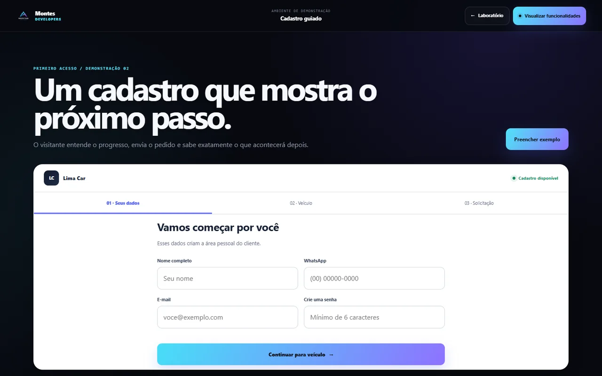

Sistema de gestão automotiva
O sistema visto pelos dois lados.
O cliente acompanha cada etapa. A empresa recebe, organiza e atualiza o serviço. Uma mesma informação, apresentada do jeito certo para cada pessoa.

A jornada conectada
Um fluxo contínuo, da solicitação à entrega.
Cada atualização feita pela empresa chega ao cliente com contexto e clareza.
- 01
Cliente solicita
Informa veículo, serviço e necessidade em poucos passos.
- 02
Empresa recebe
A equipe encontra os dados organizados no painel de gestão.
- 03
Serviço é atualizado
Status e informações avançam conforme o trabalho acontece.
- 04
Cliente acompanha
A evolução fica visível sem depender de mensagens soltas.
Lado do cliente
Solicitar sem complicação.
O portal começa com o essencial. A pessoa identifica o veículo, descreve o que precisa e envia a solicitação sem enfrentar um formulário longo.
Abrir portal do cliente

Lado da empresa
Decidir com a operação à vista.
Solicitações, clientes e serviços aparecem em um ambiente único. A equipe atualiza o andamento e mantém o histórico acessível.
Abrir acesso da empresaInformação compartilhada
O andamento fala por si.
A tela de acompanhamento traduz as atualizações internas para uma visão simples. Assim, cliente e equipe sabem onde o serviço está.

Sistemas sob medida